Hoe gebruik ik Wooclap? (vragen)
-

Meerkeuzevraag
Hier kan u een vraag stellen en antwoorden geven. -

Poll
Hier kan u een vraag stellen en antwoorden geven. Hierna kan u zien op welk antwoord het meest gestemd is. -

Woordwolk
Hier kan u mensen woorden laten invullen die iets te maken hebben met het gekozen onderwerp. De ingevulde woorden komen dan op het bord te staan en worden groter hoe meer ze ingevuld worden. -

Open vraag
Hier kan u een vraag stellen. De antwoorden komen dan op het bord te staan. -

Label een beeld
Hier kan u een foto uploaden en deze op verschillende plaatsen labelen. De leerlingen kunnen dan invullen wat ze denken dat het is. -
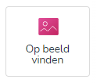
Zoek op beeld
Hier kan u een foto uploaden en de leerlingen laten zoeken waar het is. De leerlingen kunnen dan aanduiden waar ze denken dat het is. -
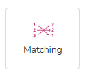
Matching
Hier kan u een onderwerp invullen en een aantal woorden eronder zetten. De leerligen kunnen dan de woorden aan elkaar linken. Bij het aanmaken moet u wel zien dat de woorden die bij elkaar horen naast elkaar staan. -
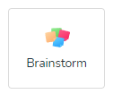
Brainstorm
Hier kan u verschillende onderwerpen toevoegen. De leerlingen kunnen dan woorden/zinnen toevoegen die met deze onderwerpen te maken hebben. -
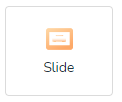
Slide
Hier kan u informatie in zetten. -
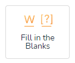
Vul de lege delen in
Hier kan u een tekst inzetten en sommige delen weglaten (om deze delen weg te laten moet [] er rond zetten). De deelnemers kunnen dan de weggelaten gedeeltes invullen. -
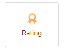
Rating
Hier kan u verschillendewoorden/zinnen inzetten en de deelnemerskunnen dan een score geven van wat ze erover denken. -
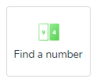
Vind het nummer
Hier kan u een zin inzetten en de deelnemers moeten raden over welk getal het gaat. -
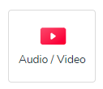
Video
Hier kan u een video toevoegen om meer informatie te geven over de komende vragen. Als u wilt kan u ook een beschrijving toevoegen over de video. -
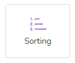
Sorteren
Hier kan u een onderwerp geven en een paar woorden die hiermee te maken hebben. De deelnemers moeten dan deze woorden in de juiste volgorde zetten. -
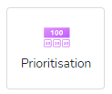
Prioritisation
Hier kan u een paar onderwerpen invoegen. De deelnemers kunnen dan deze onderwerpen in de volgorde zetten aan de hand van wat zij denken wat belangrijker is. -
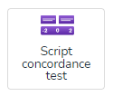
Script Concordance Test
Hier kan u een text schrijven over een gebeurtenis. Er kan dan een hypothese en extra informatie ingevuld worden. U kan ook invullen wat experten denken dat de extra info te maken heeft met de originele hypothese. -
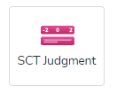
Judgment Concordance Test
Hier kan u een voorbeeld gebeurtenis met een vraag geven. De deelnemers stemmen dan hoe acceptabel ze de situatie vinden.